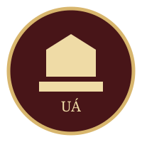

🖼️ UÁ CAMPUS · FEATURED
Campus
Royal Green Garden Reopens After Evening Facilities Upgrade
Ruang terbuka favorit mahasiswa kembali digunakan setelah perbaikan pencahayaan, meja belajar, dan jalur pejalan kaki.

University of AveriáOFFICIAL · UÁ CENTRAL ADMINISTRATIONBerita kampus yang lebih beragam: pencapaian, kegiatan mahasiswa, pengumuman, dan kabar kurang menyenangkan yang tetap manusiawi — semuanya dalam gaya portal resmi University of Averiá.
Read latestAdmissionsRuang terbuka favorit mahasiswa kembali digunakan setelah perbaikan pencahayaan, meja belajar, dan jalur pejalan kaki.
Classes have been moved to alternate rooms while maintenance continues.
Mahasiswa dapat mengajukan dukungan fiktif untuk proyek teknologi, budaya, riset, dan kegiatan sosial.
Fakultas bahasa menerbitkan jadwal pengarahan menjelang ujian tahunan yang dimulai setiap 18 Maret.
Sistem peminjaman sempat mengalami gangguan. Ruang baca tetap dibuka dan layanan manual digunakan sementara.
Area belajar malam diperpanjang untuk membantu mahasiswa menghadapi periode akademik padat.
Satu kegiatan luar ruang dipindahkan setelah cuaca tidak memungkinkan acara berlangsung.
Organisasi mahasiswa melaporkan antusiasme tinggi dari peserta lokal dan internasional.
Setiap tanggal 20 Juli, UÁ menerbitkan paket informasi pendaftaran tahunan beserta jalur dan persyaratannya.
Promosi pendaftaran tahunan UÁ dalam lore universitas.